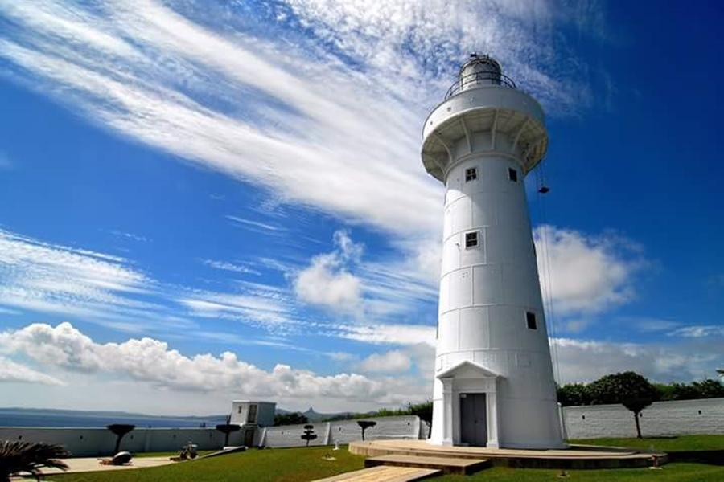

探索屏東
以墾丁國家公園和海生館著名，是熱帶海灘和水上活動的熱門地點。以下是屏東著名的景點:
墾丁
墾丁位於台灣本島最南端的恆春半島，三面環海，屬熱帶型氣候，終年氣候和暖，更擁有綿延潔白的沙灘及清澈湛藍的海域，因此成為台灣最受歡迎的海邊渡假勝地。 除了觀光外，墾丁擁有豐富且多變的生態面貌，墾丁國家公園為全台第一座國家公園，也是少數涵蓋陸域與海域的國家公園。

鵝鑾鼻燈塔
鵝鑾鼻公園以燈塔馳名國內外，因缺乏配合性遊樂設施，觀賞燈塔外景及攝影留念，別無遊樂場所，有鑒於此，前觀光局墾丁風景特定區管理處特就銅像對側景緻天成之珊瑚礁林加以闢建為一公園。

佛光山
佛光山除了最主要寺院建築外，最具特色的是大佛城，為佛光山的地標，四周皆有480尊小型金身阿彌陀佛塑像圍繞，景象莊嚴。 此外，佛教文物陳列館珍藏古今各國文物多達數千件，有機會上山值得一觀。 農曆春節到元宵期間，為佛光山最熱鬧的季節，滿山掛滿花燈，入夜後一片燈海，好不熱鬧，民眾可把握此機會，上山賞燈參訪。

屏東海生館
國立海洋生物博物館繼「台灣水域館」、「珊瑚王國館」開幕之後，結合水族館及全數位影像化的方式，介紹涵蓋全球水域、古海洋的「世界水域館」，透過先端科技的整合展示古代海洋、海藻森林、深海水域、極地水域等四大主題。 使來訪的人們在虛擬和實體結合的情境營造中，達到寓教於樂的參觀體驗。